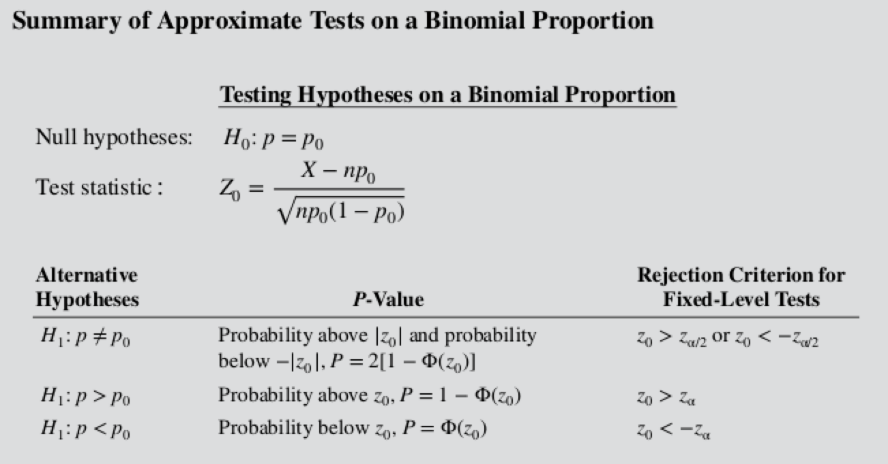

\[Z_0 = \dfrac{X - np_0}{\sqrt{np_0(1-p_0)}}\]

A semiconductor manufacturer produces controllers used in car engines. The customer requires that the fraction of defective items not exceed 0.05 and the manufacturer demonstrate this quality level at \(\alpha=0.05\). The manufacturer takes a sample of 200 units and finds 4 defective. Can the manufacturer demonstrate process capability for the customer?
\[\beta = \Phi \left( \dfrac{p_0 - p + z_{\alpha/2} \sqrt{p_0(1-p_0)/n}}{\sqrt{p(1-p)/n}} \right)\] \[ - \Phi \left( \dfrac{p_0 - p - z_{\alpha/2} \sqrt{p_0(1-p_0)/n}}{\sqrt{p(1-p)/n}} \right)\]
\[n = \left[ \dfrac{z_{\alpha/2}\sqrt{p_0(1-p_0)} + z_{\beta}\sqrt{p(1-p)}}{p_p_0} \right]^2\]
\[n = \left[ \dfrac{z_{\alpha}\sqrt{p_0(1-p_0)} + z_{\beta}\sqrt{p(1-p)}}{p_p_0} \right]^2\]
From the previous example about the semiconductor manufacturer. Suppose the defective fraction is really \(p=0.03\). What is the \(\beta\) error for a process that uses \(n=200\) and \(\alpha=0.05\)?
What is the required sample size of the manufacturer is willing to accept a \(\beta\) error as large as 0.10?
We have a sample and an assumed distribution. Can we test whether the chosen distribution is satisfactory as a population model?
Goodness-of-fit
We can derive a statistic that follows the \(\chi^2\) distribution
\[\chi_0^2 = \sum_{i=1}^k \dfrac{(O-i - E_i)^2}{E_i}\] with \(k-p-1\) degrees of freedom
We would reject \(H_0\) if \(\chi_0^2 > \chi_{\alpha,k-p-1}^2\)
The number of defects in printed circuit boards is assumed to follow a Poisson distribution. A random sample of \(n=60\) boards has been collected with the following results
| Number of defects | Observed Frequency |
|---|---|
| 0 | 32 |
| 1 | 15 |
| 2 | 9 |
| 3 | 4 |
Is the Poisson an appropriate distribution?